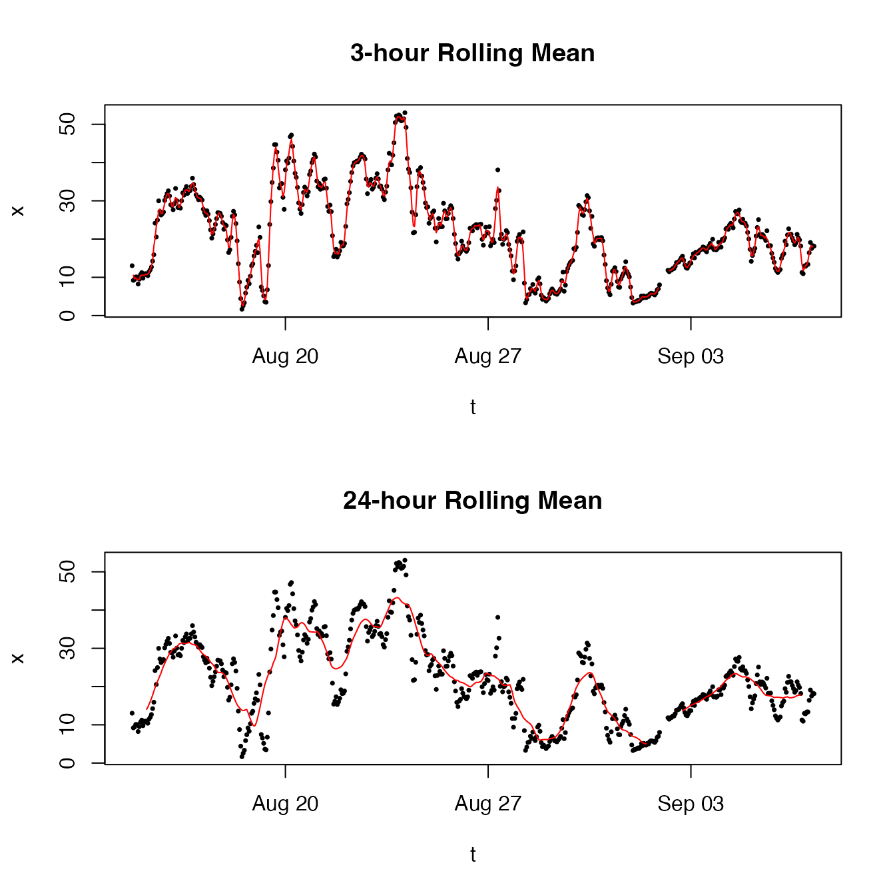
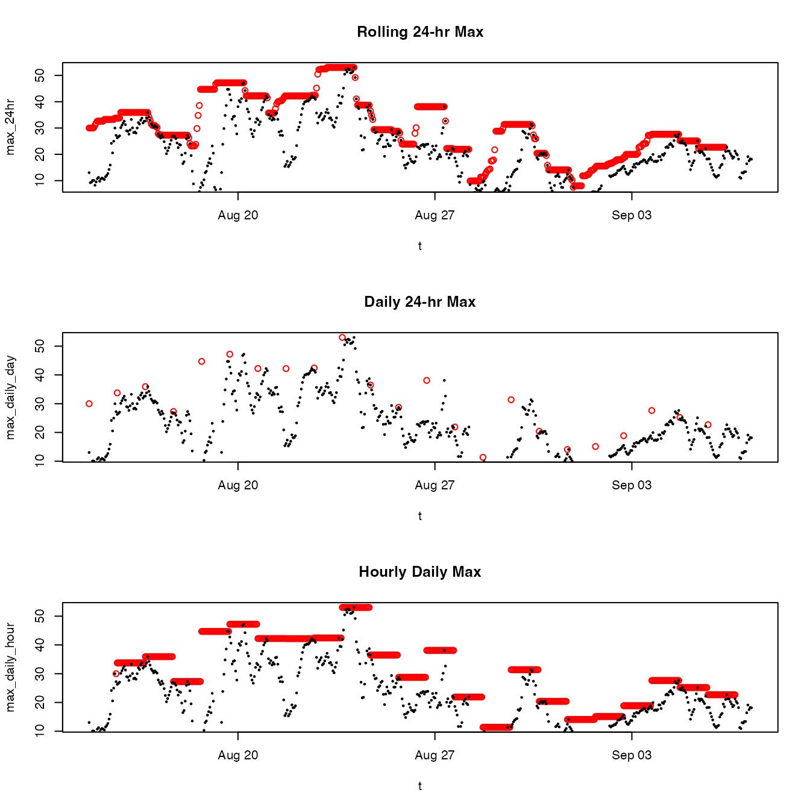
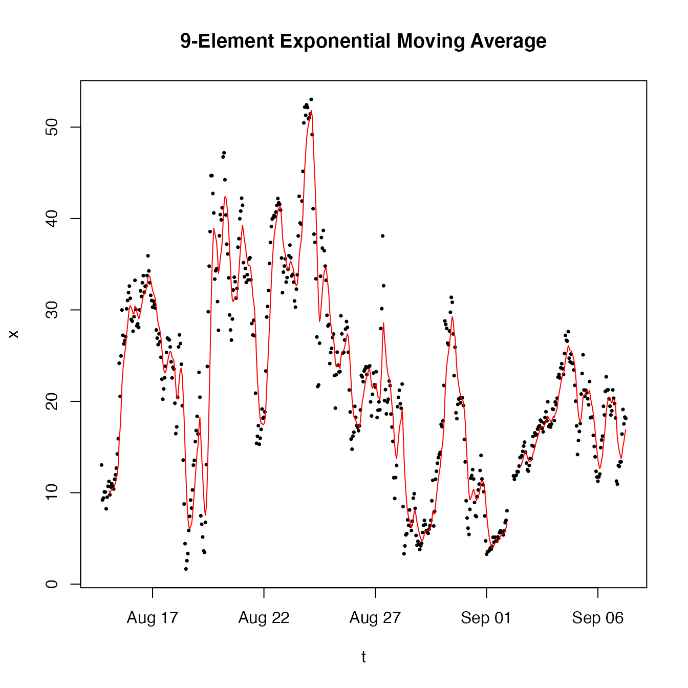

vignettes/MazamaRollUtils.Rmd
MazamaRollUtils.RmdAnalysis of time series data often involves applying “rolling” functions to calculate, e.g. a “moving average”. These functions are straightforward to write in any language and it makes sense to have C++ versions of common rolling functions available to R as they dramatically speed up calculations. Several packages exist that provide some version of this functionality:
Our goal in creating a new package of C++ rolling functions is to build up a suite of functions useful in environmental time series analysis. We want these functions to be available in a neutral environment with no underlying data model. The functions are as straightforward to use as is reasonably possible with a target audience of data analysts at any level of R expertise.
Install from CRAN with:
install.packages('MazamaRollUtils')Install the latest version from GitHub with:
devtools::install_github("MazamaScience/MazamaRollUtils")Many of the rolling functions in MazamaRollUtils have the names of familiar R functions with roll_ prepended. These functions calculate rolling versions of the expected statistic:
Additional rolling functions with no equivalent in base R include:
roll_MAD() – Median Absolute Deviationroll_hampel() – Hampel filterOther functions wrap the rolling functions to provide enhanced functionality. These are not required to return vectors of the same length as the input data.
findOutliers() – returns indices of outlier values identified by roll_hampel().All of the roll_~() functions accept the same arguments where appropriate:
x – Numeric vector input.width – Integer width of the rolling window.by – Integer shift to use when sliding the window to the next location align Character position of the return value within the window. One of: "left" | "center" | "right".na.rm – Logical specifying whether values should be removed before the calculations within each window.The roll_mean() function also accepts:
weights – Numeric vector of size width specifying each window index weight. If NULL, unit weights are used.The example dataset included in the package contains a tiny amount of data but suffices to demonstrate usage of package functions.
library(MazamaRollUtils)
# Extract vectors from our example dataset
t <- example_pm25$datetime
x <- example_pm25$pm25
# Plot with 3- and 24-hr rolling means
layout(matrix(seq(2)))
plot(t, x, pch = 16, cex = 0.5)
lines(t, roll_mean(x, width = 3), col = 'red')
title("3-hour Rolling Mean")
plot(t, x, pch = 16, cex = 0.5)
lines(t, roll_mean(x, width = 24), col = 'red')
title("24-hour Rolling Mean")
layout(1)The next example uses all of the standard arguments to quickly calculate a daily maximum value and spread it out across all indices.
library(MazamaRollUtils)
# Extract vectors from our example dataset
t <- example_pm25$datetime
x <- example_pm25$pm25
# Calculate the left-aligned 24-hr max every hour, ignoring NA values
max_24hr <- roll_max(x, width = 24, align = "left", by = 1, na.rm = TRUE)
# Calculate the left-aligned daily max once every 24 hours, ignoring NA values
max_daily_day <- roll_max(x, width = 24, align = "left", by = 24, na.rm = TRUE)
# Spread the max_daily_day value out to every hour with a right-aligned look "back"
max_daily_hour <- roll_max(max_daily_day, width = 24, align = "right", by = 1, na.rm = TRUE)
# Plot with 3- and 24-hr rolling means
layout(matrix(seq(3)))
plot(t, max_24hr, col = 'red')
points(t, x, pch = 16, cex = 0.5)
title("Rolling 24-hr Max")
plot(t, max_daily_day, col = 'red')
points(t, x, pch = 16, cex = 0.5)
title("Daily 24-hr Max")
plot(t, max_daily_hour, col = 'red')
points(t, x, pch = 16, cex = 0.5)
title("Hourly Daily Max")
layout(1)The roll_mean() function accepts a weights argument that can be used to create a weighted moving average. The next example demonstrates creation of an exponential weighting function to be applied to our data.
library(MazamaRollUtils)
# Extract vectors from our example dataset
t <- example_pm25$datetime
x <- example_pm25$pm25
# Create weights for a 9-element exponentially weighted window
# See: https://en.wikipedia.org/wiki/Moving_average
N <- 9
alpha <- 2/(N + 1)
w <- (1-alpha)^(0:(N-1))
weights <- rev(w) # right aligned window
EMA <- roll_mean(x, width = N, align = "right", weights = weights)
# Plot Exponential Moving Average (EMA)
plot(t, x, pch = 16, cex = 0.5)
lines(t, EMA, col = 'red')
title("9-Element Exponential Moving Average")